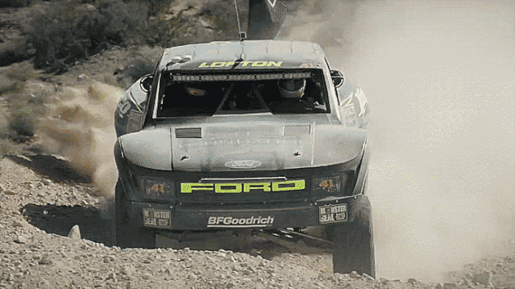

Aren't cars build for the road?
Yes ofcourse, but there are many beautiful places where normal road cars will never be able to go. Off-road cars are vehicles specifically designed and equipped to navigate challenging terrains and environments beyond traditional paved roads. These rugged vehicles are built to withstand the demands of uneven surfaces, such as dirt trails, rocky landscapes, mud, and sand. Off-road cars often feature enhanced suspension systems, durable chassis, and four-wheel-drive capability, allowing them to tackle obstacles and conquer various off-road conditions.
So who makes these cars?
Some well known manufacturers would be:
- Jeep
- Rangerover
- Land Rover
- Ford
Engines
Off-road cars employ a variety of engines to meet the diverse needs of off-road enthusiasts. Many off-road vehicles, especially larger SUVs and trucks, are equipped with powerful, torque-heavy engines. These engines are often designed to provide optimal performance in low-speed, high-torque situations, essential for navigating rough off-road terrain. Some off-road vehicles also feature specialized off-road packages with enhancements like skid plates and off-road-tuned suspensions, contributing to improved off-road performance.